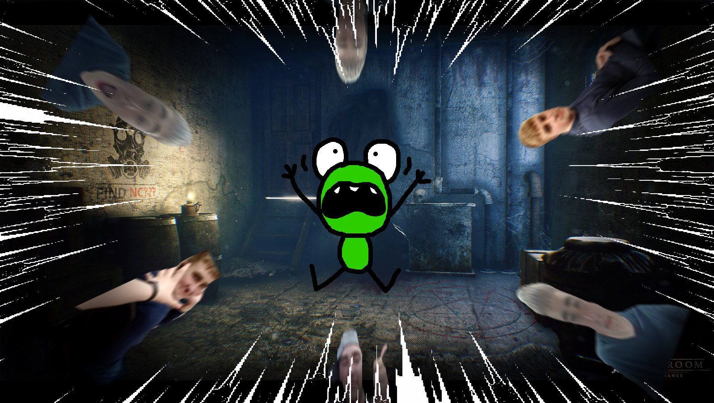

Page 10
“Any last words?”, Kervin dramatically asked. Nadeem just then remembered his last stand. “Yeah, just one thing.”, Nadeem confidently said. “Fire.” ..Suddenly, the walls of Nadeem’s house shook. One Thousand Logan Ranney Launchers emerged from every corner of the room. Without time to react, Kervin was obliterated by the force of nine thousand Logan Ranneys. A bustle of noise filled the room with a booming whir of “Nooooooooooooooooooo.”
Logan Ranney was Nadeem’s last resort, he didn’t want to use this force but he had no other choice. Nadeem was not sad though. Nadeem was satisfied. He was more than satisfied. Who knew that he would enjoy slaughtering Kervin from the Warriors so very much. Nadeem had gone clinically insane. He picked up Kervin’s gift card and crushed it between his two pinkie fingers. The old Nadeem was gone, replaced with a devious husk of who he once was. I had completely lost Nadeem, and my friend Kervin had passed. Not only do I mourn for Kervin but I also cry out for help. Who knows who might be Nadeem’s next victim. It could be some rando, it could be me, and it might even be you.